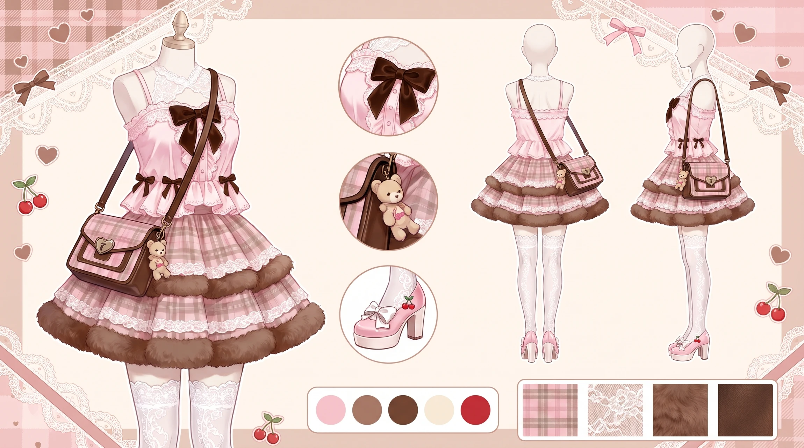
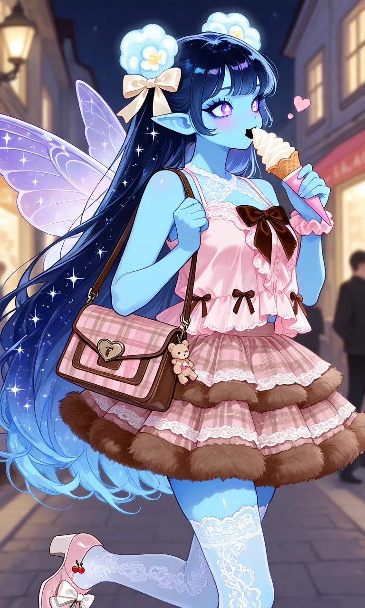

Teddy Bear Truffle

Outfit Prompt
Handbag: A structured, rectangular bag in a classic pink-and-beige tartan/plaid pattern. It has brown faux-leather or genuine leather handles and trim, a front flap with a heart-shaped metal lock/clasp, and a dangling teddy-bear charm. The overall shape is neat and slightly formal, balancing the more frilly clothing pieces.
Top A light-pink sleeveless or halter-style blouse/camisole. Key details include:
A large brown velvet or satin bow centered at the neckline Delicate white lace and eyelet embroidery across the chest Multiple layers of soft ruffles and scalloped hems Small brown ribbon bows placed along the lower edge The fabric appears lightweight and slightly sheer or textured, giving it a soft, romantic feel. Skirt A short, multi-tiered skirt in a matching soft pink-to-brown plaid. It features:
Several layers of ruffles for volume
White lace trim between the tiers
A fuzzy brown faux-fur or sherpa-like hem that adds contrast and a cozy, plush texture The silhouette is full and feminine without being overly long.
Socks Sheer-to-opaque white thigh-high stockings with an intricate openwork lace pattern running the full length. They have a delicate, almost bridal quality and help elongate the leg while reinforcing the “doll-like” aesthetic.
Hair accessories : A soft pink fabric scrunchie A large cream/ivory satin bow with long tails (can be worn in the hair or as a detachable accent)
Shoes Light-pink Mary Jane-style block-heel shoes. They feature: Wide white satin bows across the toe box Floral or embroidered fabric panels Small cherry charms on the outer side A rounded toe and moderate heel that keeps the look cute rather than formal
Outfit Examples

